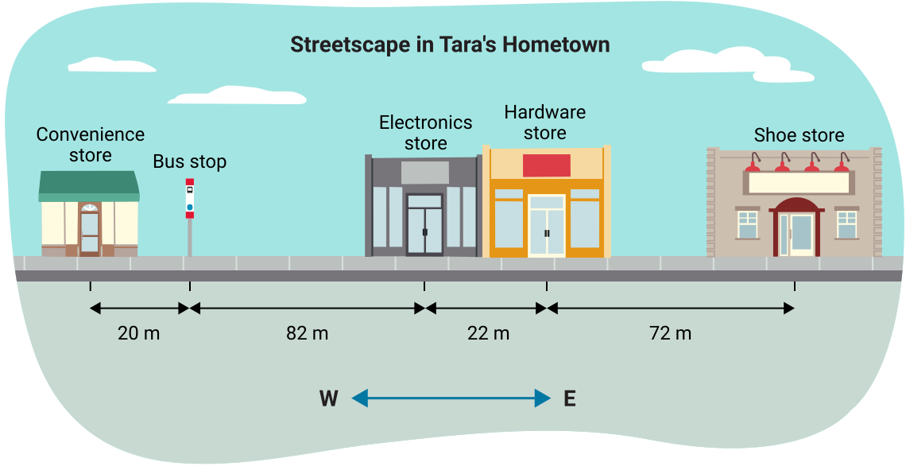
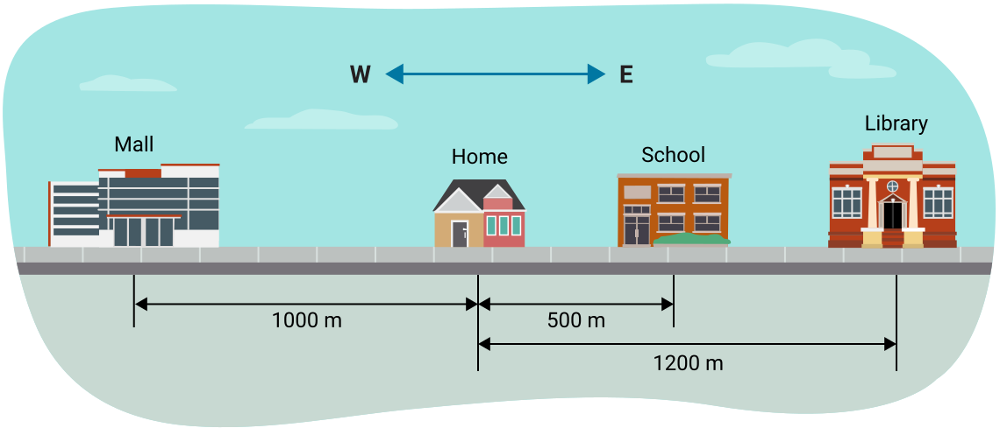
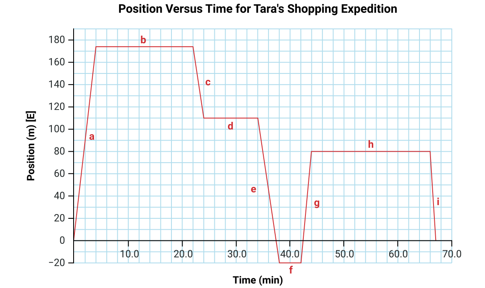
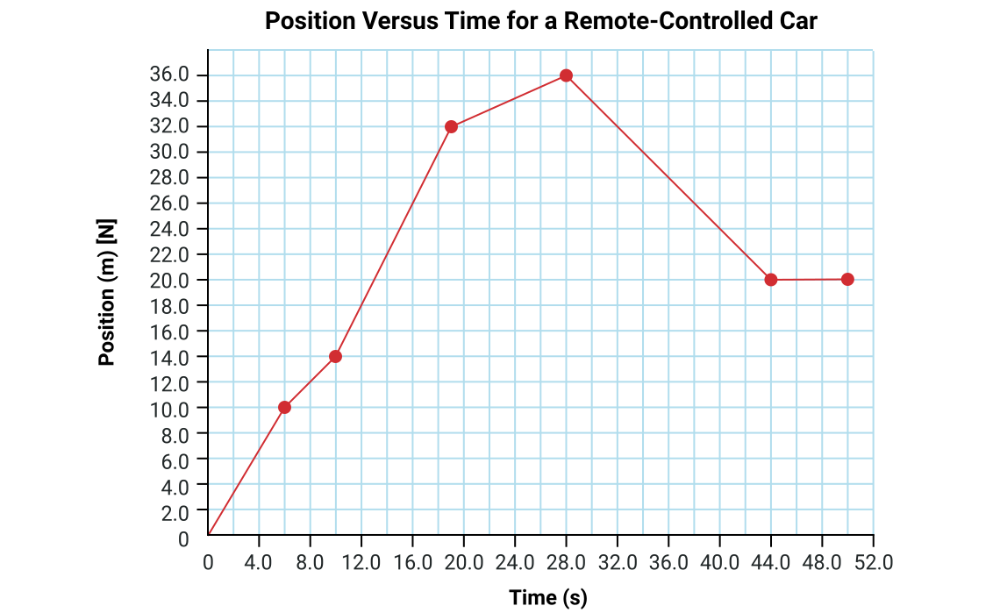
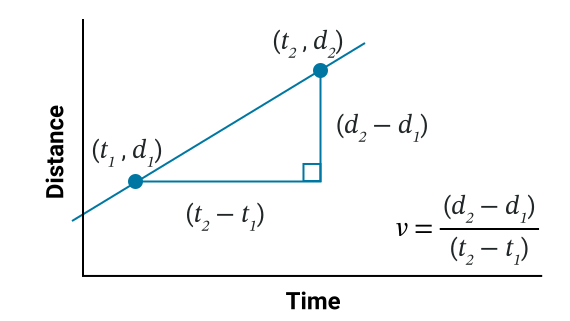
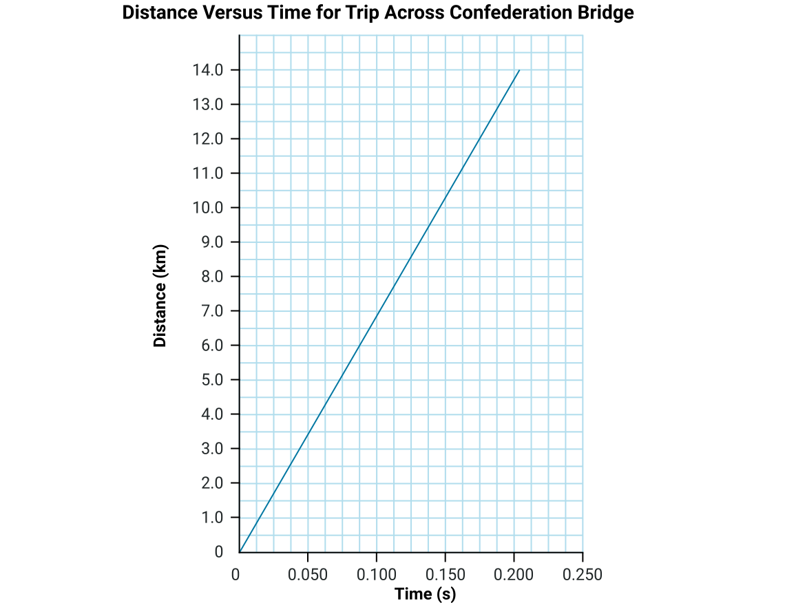
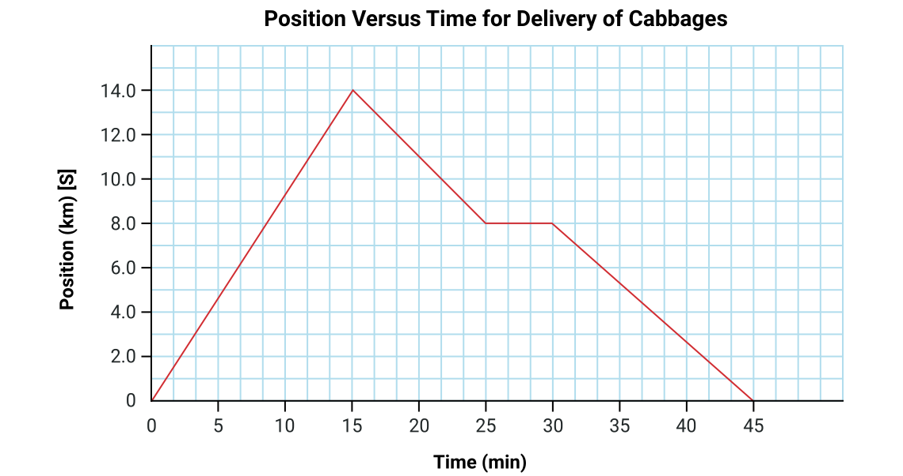
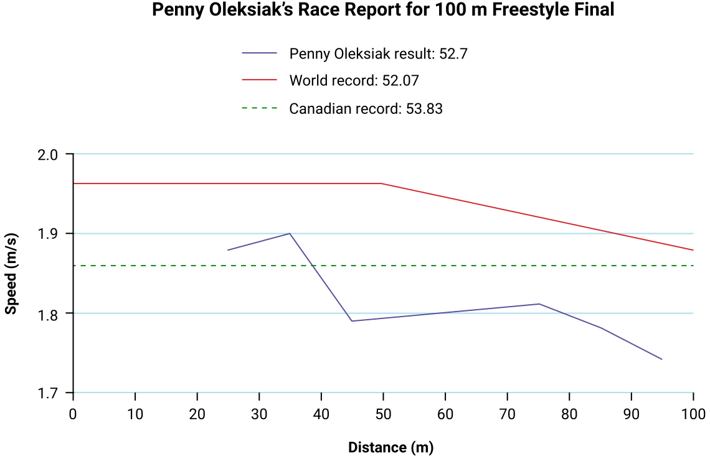

노트
어휘: 다음 어휘를 노트에 기록하여 단원 2의 제목 페이지를 구성하세요. 학습 활동을 완료하면서 각 어휘의 정의와 핵심 용어를 채워 넣으세요.
- 속력(speed)
- 시간(time)
- 거리(distance)
- 스칼라(scalar)
- 벡터(vector)
- 방향(direction)
- 크기(magnitude)
- 위치(position)
- 가속도(acceleration)
스포츠 과학
2016년 여름, 캐나다 수영 선수 Penny Oleksiak은 100미터 자유형에서 올림픽 금메달을 획득했습니다. 선수 훈련의 일부는 물리학과 관련이 있습니다. 사실, 스포츠 과학은 많은 엘리트 선수들이 개인 최고 기록을 달성하기 위해 의존하는 분야입니다. 이 경기는 캐나다 스포츠 연구소에 의해 촬영되고 분석되었습니다.
탐구해 보기!
다음 영상을 여러 번 살펴보면서 Penny(5번이며 흰색 모자를 쓰고 있음)가 다른 수영 선수들과 비교하여 어디에 위치해 있는지 관찰하세요.
생각해 보기
영상을 살펴보았으니, 이제 다른 경쟁자들과 비교하여 Penny의 운동에 대해 생각해 보세요.
경기에서 다음과 같은 구간에 대해 생각해 보세요:
- Penny가 다른 수영 선수들보다 뒤처져 있었던 구간
- Penny가 속력을 높여 경쟁자들을 추월한 구간
운동 소개
마지막으로 신체 활동에 참여하거나 스포츠 경기를 관람했던 때를 생각해 보세요. 이러한 활동의 대부분은 가능한 한 빠르게 움직이거나 속력의 변화에 의존합니다. 이 학습 활동에서 이러한 유형의 운동을 분석하는 데 도움이 되는 개념들을 배우게 됩니다.
모든 운동이 동일한 것은 아닙니다. 차량과 같은 물체는 속력을 높이거나 낮추거나 방향을 자주 바꾸는 경향이 있습니다. 운동을 분석하려면 이를 설명하기 위한 적절한 용어가 필요합니다.
다음 운동의 예시 중 하나는 등속 운동을 설명하는 것으로, 이는 속력 변화 없이 한 방향으로 이동하는 운동입니다.
생각해 보기
등속 운동을 설명하는 이미지를 찾아보세요.
직선으로 자전거를 타는 사람이 등속 운동을 나타냅니다. 다른 상황들은 방향 및/또는 속력의 변화를 수반하므로 비등속 운동의 예시에 해당합니다.
운동을 어떻게 나타낼 수 있을까요?
운동은 표, 그래프, 방정식으로 나타낼 수 있습니다.
등속 운동
등속 운동은 한 방향으로 속력의 변화 없이 이동하는 운동을 설명하는 용어입니다.
비등속 운동
비등속 운동은 등속 운동이 아닌 모든 운동을 말합니다.
직접 해보기!
운동에 대한 이해도를 확인하기 위해 다음 문제를 풀어보세요.
스칼라량과 벡터량
물리학자들은 다양한 물리량을 측정하고 계산합니다.
생각해 보기
다음 예시들을 두 그룹으로 분류하는 방법을 생각해 보세요.
| 8.0 m/s [위] | 1.02 g/cm3 | 40 km/h [앞으로] |
| 54 °C | 67 km [서쪽] | 300 m |
| 2.2 m/s2 [북쪽] | 7.2 min | 36 kg |
이 예시들을 분류하는 방법은 여러 가지가 있을 수 있지만, 일부는 방향을 포함하고 나머지는 단순히 양만 나타내는 것에 주목하세요. 방향이 포함된 모든 값은 벡터입니다. 나머지는 적절한 단위와 함께 크기를 제공하지만 방향이 없으므로 스칼라입니다.
| 벡터 | 스칼라 |
|---|---|
|
2.2 m/s2 [북쪽] 67 km [서쪽] 40 km/h [앞으로] 8.0 m/s [위] |
54 °C 1.02 g/cm3 7.2 min 300 m 36 kg |
스칼라량과 벡터량은 등속 운동과 비등속 운동을 설명하는 데 도움이 됩니다. 등속 운동은 방향 변화 없이 일정한 속력을 포함한다는 것을 기억하세요.
벡터량을 나타내는 기호는 변수 위에 전체 화살표 또는 반 화살표를 사용할 수 있습니다. 이 과목에서는 변수 위에 전체 화살표를 사용합니다.
방향은 종종 대괄호를 사용하여 표시합니다. 예를 들어, 북쪽은 [N] 또는 [north]로 씁니다. 방향이 한 글자로 표시되면 대문자를 사용합니다: N, S, E, W. 영어로 전체 단어를 쓸 경우 소문자를 사용합니다: [north], [south], [east], [west]. 거리는 두 물체 사이의 간격을 측정한 것입니다. 이것은 방향이 관련되지 않으므로 스칼라량입니다. 여러분으로부터 서쪽으로 15 m 떨어져 서 있는 사람과 위로 15 m 떨어져 있는 사람은 모두 "15 m"의 거리를 가집니다.
변위는 벡터량으로, 물체의 위치 변화를 나타냅니다. 12 m [W]의 변위는 물체의 위치가 시작점에서 서쪽으로 12미터 이동했음을 알려줍니다.
| 스칼라 | 벡터 |
|---|---|
| 거리 () 예: 12 m | 변위 ( ) 예: 12 m [W] |
| 속력 () 예: 45 m/s | 속도 (
) 예: 45 m/s [N] 가속도 ( ) 예: 30 m/s2 [S] |
| 시간 () 예: 90 s | 해당 없음 |
직접 해보기!
스칼라와 벡터에 대한 이해도를 확인하기 위해 다음 문제를 풀어보세요.
운동 설명하기
대부분의 실생활 운동은 비등속 운동입니다. 집에서 가장 가까운 가게나 운동장까지 가면서 방향을 바꾸는 횟수를 생각해 보세요. 이러한 방향 변화는 경로나 도로를 따라가고 장애물을 피하기 위해 속력 변화를 필요로 합니다. 차량은 정지 표지판이나 신호등과 같은 교통 신호를 준수하기 위해 속력을 변화시켜야 합니다. 보도를 걷는 사람은 다른 사람을 지나가게 하기 위해 옆으로 이동하거나, 앞 사람 뒤에서 속도를 줄여야 합니다.
이러한 경로를 적절히 설명하려면 거리와 시간 이상의 정보가 필요합니다. 다양한 거리가 어느 방향으로 이동되었는지 알아야 합니다.
운동 설명하기: 거리
Tara의 고향 거리에 대한 다음 도식을 살펴보세요:

도식에서 거리(기호: )는 두 물체 또는 장소가 얼마나 떨어져 있는지를 나타냅니다. 거리는 스칼라량이므로 방향은 명시하지 않습니다.
예시
- 편의점에서 버스 정류장까지의 거리는 20 m입니다.
- 편의점에서 철물점까지의 거리는: 20 m + 82 m + 22 m = 124 m입니다.
직접 해보기!
다음 도식을 사용하여 신발 가게에서 전자제품 가게까지의 거리를 구해 보세요:
94 m
72 m + 22m = 94 m
운동 설명하기: 위치
물체의 위치(기호: )는 기준점으로부터의 거리(크기)와 방향입니다. 위치는 벡터량입니다. 이것을 일반적인 x-y 좌표계처럼 생각할 수 있는데, 기준점으로부터 양의 방향과 음의 방향이 모두 있습니다. 데카르트 평면에서 점 이 기준점입니다. 다음 도식에서 버스 정류장을 기준점으로 생각하세요.
예시
- 편의점의 위치는 20 m [W]입니다. 이것은 버스 정류장에서 서쪽으로 20 m 떨어져 있습니다.
참고: 편의점의 위치는 20 m [W] 또는 – 20 m [E]로 기록할 수 있습니다. "음의 동쪽"은 동쪽의 반대, 즉 서쪽을 의미하기 때문입니다.
- 신발 가게의 위치는 176 m [E]입니다. 이것은 버스 정류장에서 동쪽으로 82m + 22m + 72 m 떨어져 있습니다.
참고: 기준점이 변경되면 위치도 변경됩니다.
운동 설명하기: 변위
변위 (기호:
)는 물체의 위치 변화입니다.
변위는 벡터량입니다.
변위를 구하려면, 시작 위치에서 끝 위치까지의 거리를 고려하고, Tara의 고향 도식을 사용하여 방향을 포함하세요.
예시
철물점에서 편의점까지 걷는 사람의 변위를 구하세요.
철물점에서 편의점까지의 변위는 124 m [W]입니다. 두 곳 사이의 거리는 124 m이고, 철물점에서 편의점으로 이동할 때 서쪽으로 이동합니다. 여러 곳에 정차하는 경우, 변위를 구하려면 시작점과 끝점만 고려하면 됩니다.
직접 해보기!
거리와 변위의 개념을 더 잘 이해하기 위해 다음 시뮬레이션 활동을 실험해 보세요.
개념을 이해하고 가이드 안의 문제에 답하려면 다음 거리와 변위새 창에서 열림 가이드를 사용하세요.
- 시작점이 -25 m이고 도착점이 +25 m이면, 변위는 50 m입니다.
- 시작점이 -15 m이고 도착점이 +25 m이면, 변위는 40 m입니다.
- 자동차가 왼쪽을 향하면, 변위는 음의 값이 되고 자동차는 왼쪽으로 이동합니다. 거리는 양수로 유지됩니다.
- 자동차가 앞뒤로 움직이더라도, 변위는 항상 시작점에서 최종 위치까지의 길이이며, 자동차가 시작점의 왼쪽에서 끝나면 음수입니다. 거리는 이동한 총 공간의 양을 추적합니다.
접근성 버전은 여기를 누르세요: 거리와 변위(새 창에서 열림)
다음 방정식을 사용하여 물체의 변위를 구할 수 있습니다.
공식
변위
변위 공식을 사용하려면, 기준점을 기준으로 최종 위치에서 초기 위치를 빼면 됩니다.
1. 철물점에서 편의점까지 걷는 사람의 변위를 구하세요.
주어진 값:
미지수:
방정식:
풀이:
결론:
이 사람의 변위는 -124 m입니다. (변위는 "124 m [W]"로도 표현할 수 있습니다.)
2. Chris는 신발 가게에서 출발하여 버스 정류장까지 걸은 후 다시 철물점으로 돌아왔습니다. Chris의 변위를 구하세요.
앞서 제공된 도식에서 버스 정류장이 기준점임을 기억하세요.
주어진 값:
변위를 측정할 때 이동 경로는 중요하지 않습니다. 시작점과 끝점만 중요합니다. 시작점은 신발 가게였고, 끝점은 철물점입니다.
미지수:
방정식:
풀이:
결론:
이 사람의 변위는 -72 m, 즉 72 m [W]입니다.
노트
노트를 사용하여 다음 각 문제를 완성할 수 있습니다. 이해도를 확인하기 위해 예시 답안과 비교해 보세요.
문제 1에 Tara의 고향 도식을 사용하세요.
1. 전자제품 가게에서 신발 가게를 거쳐 버스 정류장까지 이동한 변위를 구하세요:
주어진 값:
미지수:
방정식:
풀이:
결론:
변위는 82 m [W]입니다.
나머지 문제에는 다음 도식을 사용하세요.
왼쪽 열에서 일치시키고자 하는 변위를 선택하세요. 그런 다음 오른쪽 열에서 일치하는 거리를 선택하여 이해도를 확인하세요.

그래프로 운동 시각화하기
위치-시간 그래프에서도 거리, 위치, 변위에 대한 정보를 얻을 수 있습니다.
예시 1: Tara의 야외 나들이
다음 위치-시간 그래프는 Tara의 야외 나들이를 나타냅니다. Tara는 버스 정류장에서 출발하여 다음과 같이 이동했습니다:
- 4.0분 동안 신발 가게까지 걸었습니다
- 18.0분 동안 그곳에 머물렀습니다
- 2.0분 동안 철물점까지 걸었습니다
- 10.0분 동안 그곳에 머물렀습니다
- 편의점까지 4.0분이 걸렸습니다.
- Tara는 4.0분 동안 그곳에 머물렀습니다.
- 전자제품 가게까지 2.0분 걸었습니다
- 22.0분 동안 그곳에 머물렀습니다
- 1.0분 만에 버스 정류장으로 뛰어 돌아왔습니다

세로축이 "위치"로 표시되어 있고, 윗부분에 "E"(동쪽)가 표시되어 있음에 주목하세요. 이것은 기준점의 동쪽 위치를 양수로, 기준점의 서쪽 위치를 음수로 간주한다는 것을 나타냅니다. (이것은 다소 임의적입니다. 반대 방향에 양수와 음수 부호를 어떤 식으로든 할당할 수 있으므로, 서쪽을 양수로, 동쪽을 음수로 할 수도 있었습니다.)
예시 2: 위치 대 시간 그래프 분석
Tara의 쇼핑 나들이의 다음 위치-시간 그래프를 분석합니다.
노트
이제 운동 데이터를 그래프로 나타내 볼 차례입니다. 예시 답안과 비교하여 이해도를 확인하기 전에 이 문제들을 먼저 직접 풀어보세요.
1) 보도를 따라 이동하는 무선 조종 자동차의 운동이 다음 데이터 표에 나와 있습니다:
| 시간 (s) | 위치 (m) [N] |
|---|---|
| 0 | 0 |
| 6.0 | 10.0 |
| 10.0 | 14.0 |
| 19.0 | 32.0 |
| 28.0 | 36.0 |
| 44.0 | 20.0 |
| 50.0 | 20.0 |
a) 다음 모눈종이새 창에서 열림를 인쇄하거나 노트에 표를 복사하여 위치-시간 그래프를 만드세요. 제목과 축 이름을 포함하세요.
b) 자동차가 이동한 총 거리는 얼마인가요?
c) 19.0초에서 자동차의 변위는 얼마인가요?
d) 44.0초에서 자동차의 변위는 얼마인가요?
e) 이 그래프는 등속 운동을 나타내나요, 비등속 운동을 나타내나요? 선택의 이유를 설명하세요.
a)

b) dtotal = 10 m + 4 m + 18 m + 4 m + 16 m + 0 m = 52.0 m
c) 32.0 m [N]
d) 20.0 m [N]
e) 그래프의 기울기에 변화가 있으므로 비등속 운동을 나타내며, 이는 속도와 방향의 변화를 나타냅니다.
잠깐 쉬어가기!
훌륭합니다! 다음 섹션으로 넘어가기 전에 잠시 쉬어가기에 좋은 시간입니다.
운동 설명하기: 속력
도입부에서 수영 경기를 살펴보았을 때, 속력의 많은 변화와 방향의 변화가 있기 때문에 수영 선수가 비등속 운동을 한다는 것을 알 수 있었을 것입니다. 속력과 속도는 사람들이 같은 의미로 자주 사용하는 두 단어입니다. 그러나 물리학에서 속력과 속도는 구체적이고 다른 의미를 가집니다.
정의
속력이라는 용어는 무언가가 얼마나 빠르게 움직이고 있는지를 의미합니다. 예를 들어, 트럭이 85 km/h로 달리고 있다는 표현은 거리 대 시간의 비율을 설명합니다 (예: 1시간에 트럭은 85 km를 이동합니다).
속도는 속력(크기)에 방향을 더한 것입니다 (예: 트럭이 85 km/h [N]으로 달리고 있습니다). 이것은 변위 대 시간의 비율입니다.
예시 1: 속력 구하기
3.0시간 동안 255 km를 이동할 수 있는 기차의 속력은 얼마인가요?
주어진 값:
미지수:
방정식:
풀이:
결론:
기차의 속력은 85 km/h입니다.
예시 2: 시간 구하기
피어슨 국제공항에서, 일정한 속력 7.2 km/h로 움직이는 Pier F의 212 m 길이의 무빙 워크를 타는 데 얼마나 걸리나요?
주어진 값:
참고: 속력은 km 단위이고 거리는 m 단위이므로, 한 측정값을 다른 것과 일치하도록 변환해야 합니다. 속력에 맞추기 위해 거리를 킬로미터로 변환하겠습니다.
미지수:
방정식:
풀이:
결론:
무빙 워크를 이동하는 데 0.029 h (1.8분)이 걸립니다.
그래프에서 속력 계산하기
거리-시간 그래프를 사용하여 물체의 속력을 구할 수 있습니다. 속력은 거리 대 시간의 비율이므로, 거리-시간 그래프의 기울기를 구하여 속력을 계산할 수 있습니다.
기울기를 계산하는 것은 상승(수직 좌표의 변화량) 대 수평이동(수평 좌표의 변화량)의 비율을 구하는 것임을 배웠습니다.
수학에서,
또는
다음 거리-시간 그래프에서 y축과 x축 대신 거리축과 시간축이 있습니다.
따라서 기울기 공식은 다음과 같이 됩니다:
또는
이 비율에 대한 방정식은:
이것은 이전에 사용한 같은 방정식의 간략한 형태로도 쓸 수 있습니다:

예시: 트럭의 속력 (그래프 사용)
다음 그래프가 직선이고 각 시간 간격마다 거리가 같은 양만큼 증가하는 것에 주목하세요. 이제 그래프에서 두 점을 선택하고 이를 사용하여 그래프의 기울기를 구하세요.

위치-시간 그래프
이전 섹션에서 거리-시간 그래프의 기울기가 속력을 나타낸다는 것을 알았습니다. 위치-시간 그래프의 기울기는 무엇을 나타낼까요?
이 그래프의 기울기는 위치의 변화량 대 시간의 변화량의 비율을 나타냅니다.
이것은 벡터를 포함하므로 속력이라고 부르지 않습니다. 이 비율을 속도라고 합니다.
공식
Tara의 야외 나들이에 대한 다음 그래프로 돌아가면, 그래프의 기울기들이 서로 다른 것에 주목하세요. 이것은 Tara가 서로 다른 속도로 걸었음을 나타냅니다.
직접 해보기!
이제 속도 공식을 사용하여 걷기의 첫 번째 구간 "a"에 대한 Tara의 속도를 계산해 보세요.
주어진 값:
*앞서 언급했듯이, [E]는 선택 사항입니다.
미지수:
방정식:
풀이:
결론:
속도는 44 m/s [E]입니다.
직접 해보기!
이제 다음 "운동 그래프 그리기" 인터랙티브 시뮬레이션을 사용하여 그래프에서 일정한 속도를 구해 보세요.
세 구간으로 이루어진 위치-시간 그래프를 보게 됩니다. 각 구간은 다른 색의 선으로 되어 있습니다. 목표는 그래프의 기울기를 구하여 각 구간의 속도를 계산하는 것입니다. 각 구간의 속도와 선의 색을 기록하세요.
드롭다운 메뉴에서 세 개의 답을 선택한 후 "결과 확인"을 누르세요. 답을 확인한 다음 "새 차트 생성"을 눌러 다른 벡터 조합을 시도해 보세요. 단위를 포함할 필요는 없습니다.
기억하세요:
- 기울기가 양수이면 속도는 양의 방향입니다.
- 기울기가 음수이면 속도는 음의 방향이므로, 수치 앞에 음수 부호를 입력하세요.
접근성 버전은 여기를 누르세요: 운동 그래프 그리기(새 창에서 열림)
예시: 그래프에서 속력과 속도
다음 그래프의 직선 기울기에서 보듯이, Tara는 나머지 걷기 구간에서도 같은 속도로 걸었을까요? 첫 번째 구간보다 기울기가 더 가파른 선은 Tara의 야외 나들이 중 첫 번째 구간보다 더 빠르게 걷고(또는 뛰고) 있었던 구간을 나타냅니다. 첫 번째 구간보다 기울기가 덜 가파른 선은 더 느린 걷기 속도를 나타냅니다.
기울기가 0인 선(수평선)은 무엇을 나타내나요?
이것은 Tara가 가게에 있었던 시간에 해당하므로, 이야기에 이 정보는 추가되지 않았습니다. Tara의 위치가 변하지 않았다고 가정되었으므로, 이 구간들은 정지해 있는 것으로 처리되었습니다.
예시: 평균 속력과 평균 속도
1. 다음 공식을 사용하여 Tara의 야외 나들이에 대한 평균 속력과 평균 시간을 계산하세요.
평균 속력:
평균 속도:
a) 여러분의 값이 수치적으로 일치하나요?
Tara의 야외 나들이에 대한 평균 속력은 10.0 m/min이었고, 평균 속도는 0이었습니다 (Tara의 총 변위가 0이었으므로).
노트
노트를 사용하여 다음 각 문제를 완성할 수 있습니다. 이해도를 확인하기 위해 예시 답안과 비교해 보세요.
1. 다음 위치 대 시간 그래프를 사용하여 다음 질문에 답하세요:
a) 0분 - 25분의 평균 속력을 km/min 단위로 구하세요.
b) 0분 - 25분의 평균 속도를 km/min 단위로 구하세요.

a)
주어진 값:
0분에서 15분 사이의 거리는 14.0 km입니다.
15분에서 25분 사이의 거리는 |8.0 - 14.0| = 6.0 km입니다.
미지수:
방정식:
풀이:
결론:
평균 속력은 0.80 km/min입니다.
b)
주어진 값:
미지수:
방정식:
풀이:
결론:
평균 속도는 0.32 km/min [S]입니다.
Penny Oleksiak의 경기
운동의 개념을 배운 후, 학습 활동 시작 부분에서 소개했던 Penny Oleksiak의 경기를 다시 살펴봅시다.
다음 그래프는 2016년 하계 올림픽 100미터 자유형 경기에서 Penny Oleksiak의 거리 대 속력을 나타냅니다. 그래프에는 같은 종목의 캐나다 기록과 세계 기록에 대한 선도 포함되어 있습니다 .

거리, 위치, 속력, 속도에 대한 지식을 사용하여 다음 질문에 답하고 예시 답안과 비교해 보세요.
- 수영장을 가로질러 갔다가 시작 위치로 돌아오는 100 m 자유형 경기에서 Penny의 총 변위는 얼마인가요?
시작 위치로 돌아왔으므로 변위는 0 m입니다.
- 100 m 자유형 경기의 총 거리는 얼마인가요?
이름에서 알 수 있듯이, 이 경기는 100 m의 거리를 포함합니다.
- 경기 중 Penny의 평균 속력을 계산하세요. GUESS 풀이법은 필요하지 않습니다.
52.7초 동안 100 m를 이동했으므로, 평균 속력은 1.90 m/s입니다. (올림픽 경기에서 100 m는 매우 정밀하게 측정되므로 유효숫자 3자리로 표기할 수 있습니다.)
- 전체 경기에 대한 Penny의 평균 속도를 계산하세요.
변위가 0이므로, 평균 속도도 0입니다: 0 m/s.
- 그래프에 따르면 35 m와 50 m 사이에서 속력이 크게 감소합니다. 왜 그럴까요?
수영 선수가 수영장 끝까지 갔다가 돌아오기 때문에, Penny는 50 m 지점에서 방향을 바꾸기 위해 속력을 줄여야 했습니다.
자기 점검 퀴즈
이해도를 확인해 보세요!
다음 자기 점검 퀴즈를 완료하여 학습 진행 상황과 집중해야 할 영역을 파악하세요.
이 퀴즈는 피드백용이며 성적에 포함되지 않습니다. 이 퀴즈에 대한 시도 횟수는 무제한입니다. 시간을 갖고 최선을 다하며, 제공되는 피드백을 되돌아보세요.
퀴즈를 눌러 이 도구에 접근하세요.
(새 창에서 열림)